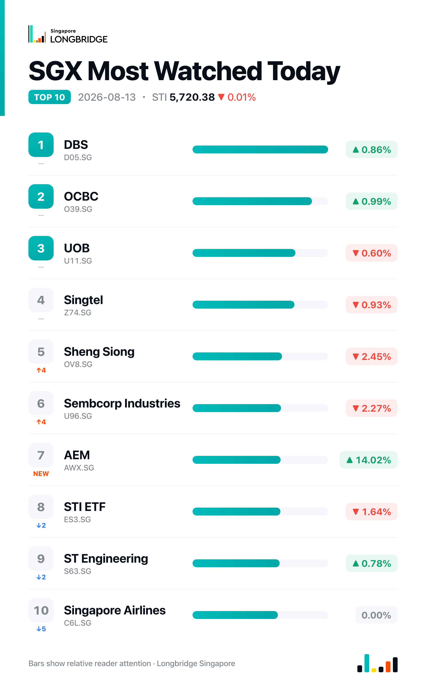

STI Ends Flat at 5,720.38 as CityDev's Tripled Profit Offsets a Broad Pullback, UOL Slides 6.1%
The Straits Times Index closed at 5,720.38 on Thursday, down 0.37 points, or 0.01%, after swinging between an intraday low of 5,667.09 and a high of 5,732.39. The near-flat headline masked a lopsided session underneath: only six of the benchmark's 30 constituents advanced against 19 decliners and five unchanged, with the index's resilience owed to a handful of names led by City Developments.
The market opened higher before fading through the morning, falling as much as 0.31% to 5,703.29 by around 9:10am on broad early selling, before paring losses into the close. First-half earnings season stayed in full swing: City Developments' profit surge and gains in two of the three local banks — OCBC up 0.99% and DBS up 0.86%, breaking Wednesday's synchronised three-way decline — offset a broader pullback spanning UOB (down 0.60%), developer UOL, plantations group Wilmar (down 5.84%) and conglomerates Jardine Matheson (down 2.16%) and Jardine Cycle & Carriage (down 2.12%).
Session Movers
City Developments (C09.SG, +4.33%) was the session's best performer and its early leader, having traded up as much as 8.52% intraday before settling higher, after first-half net profit roughly tripled to S$301.6 million on a 61% jump in revenue to S$2.7 billion, driven by a strong real estate showing — including recognition from the Lumina Grand project — and its hotel business turning profitable. The board declared a tax-exempt interim dividend of 6 Singapore cents a share, with the stock going ex-dividend on August 20 and payment due September 4. CityDev trades at 0.75 times book, cheaper than 57% of the past year, with a consensus Buy target of S$10.59 implying about 29% upside.
OCBC (O39.SG, +0.99%) rose after pricing a S$750 million perpetual capital securities offering at 3.20%, first callable in 2031, structured to qualify for MAS Additional Tier 1 treatment; the notes are due to list on the SGX on August 20, with proceeds earmarked for general corporate purposes. The move follows Wednesday's target-price increase to S$36.60 from DBS Group Research, which kept its Buy rating on the stock.
Sembcorp Industries (U96.SG, -2.27%) fell after reporting a decline in first-half underlying net profit to S$369 million, weighed down by one-off transaction costs tied to its acquisition of Australia's Alinta Energy, even as turnover rose 28% year-on-year and the interim dividend was raised to 11.0 cents a share. The group also disclosed a separate acquisition of Australia's Pioneer Sail Holdings for AUD 5.64 billion and pointed to a stronger second half with higher contract levels and continued deleveraging.
UOL Group (U14.SG, -6.1%) was the session's weakest constituent, giving back Wednesday's 2.42% advance and then some, with no fresh company news accompanying the drop. That prior gain had been tied to a newly formed joint venture with Kheng Leong for a residential project and a 23% year-on-year rise in first-half PATMI to S$252.2 million reported the same day. UOL trades at 0.71 times book, within its one-year range of 0.59–0.75 times, with a consensus Buy target of S$12.09 implying about 27% upside.

One point worth noting
Thursday's near-flat close obscured a heavily lopsided session: just six of the STI's 30 constituents advanced while 19 declined, with virtually all of the index's support coming from City Developments' 4.33% jump and modest gains in two of the three banks. It is close to the mirror image of August 6, when a handful of heavyweights drove the index sharply higher despite far more decliners than advancers — a reminder that a headline move near zero can still sit on top of sharply divided underlying action.
This recap is for informational purposes only and does not constitute investment advice.